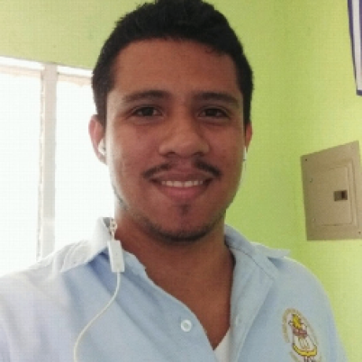

How Shall They Hear?
"How then shall they call on Him in whom they have not believed? And how shall they believe in Him of whom they have not heard? And how shall they hear without a preacher? And how shall they preach unless they are sent? As it is written: 'How beautiful are the feet of those who preach the gospel of peace, who bring glad tidings of good things!'"
Every mission requires a sender. Your support provides the means for the Gospel to reach those who have not yet heard. Join us in this ministry to ensure the Word of God continues to be taught and shared.
Support the Preaching of the GospelFeatured Ministry Videos
A look into our mission and activities from November 2025 through October 2026.
December 2025: Year-End Celebration
January 2026: Learning about Moses
February 2026: Special Visit
About the Pineda Amador Family Ministry
Juan Pineda

I was baptized into Christ in 2011. I am currently pursuing a Bachelor’s degree in Theology at Sunset International Bible Institute, equipping myself to serve the Lord and His Kingdom with greater faithfulness and effectiveness.
Ana Amador
I have been passionate about children’s ministry since I was 12 years old. My heart’s vision is to help boys and girls grow in their faith, come to know Jesus personally, and build a deep, lifelong understanding of God’s Word.
Teaching and Edification Resources
Recent Sermons
Access sermons, Bible studies, and conferences from our local ministry.
View CollectionChildren's Ministry Material
Lessons, activities, and guides for parents and teachers.
Download ResourcesJoin the Mission
Every donation allows us to focus on preaching and children's ministry.
Support UsWe thank you in advance for your generosity in Christ.